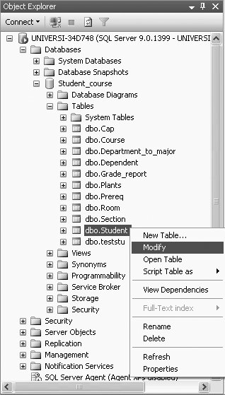
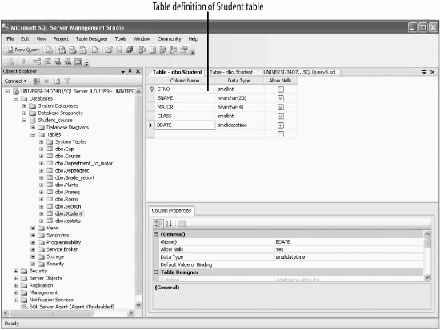

1.7. Viewing Table DataTo view the data in a table, right click on the table, as shown in Figure 1-22, and select Open Table. For example, to view the data of the Student table, right-click on the Student table, and select Open Table. This will show all 48 rows of the Student table, of which we show the first 14 rows here:
STNO SNAME MAJOR CLASS BDATE
----- ------- ------ ----- ----------------------
2 Lineas ENGL 1 4/15/1980 12:00:00 AM
3 Mary COSC 4 7/16/1978 12:00:00 AM
8 Brenda COSC 2 8/13/1977 12:00:00 AM
10 Richard ENGL 1 5/13/1980 12:00:00 AM
13 Kelly MATH 4 8/12/1980 12:00:00 AM
14 Lujack COSC 1 2/12/1977 12:00:00 AM
15 Reva MATH 2 6/10/1980 12:00:00 AM
17 Elainie COSC 1 8/12/1976 12:00:00 AM
19 Harley POLY 2 4/16/1981 12:00:00 AM
20 Donald ACCT 4 10/15/1977 12:00:00 AM
24 Chris ACCT 4 2/12/1978 12:00:00 AM
34 Lynette POLY 1 7/16/1981 12:00:00 AM
49 Susan ENGL 3 3/11/1980 12:00:00 AM
62 Monica MATH 3 10/14/1980 12:00:00 AM
.
.
.
This screen also allows you to insert data, make changes to the data, and save this changed data. Figure 1-22. Modifying/viewing the table definitionFigure 1-23. Viewing the table definition of the Student table using the Modify option |